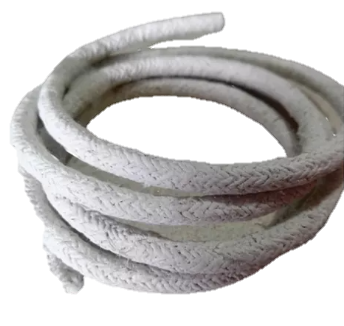
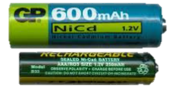
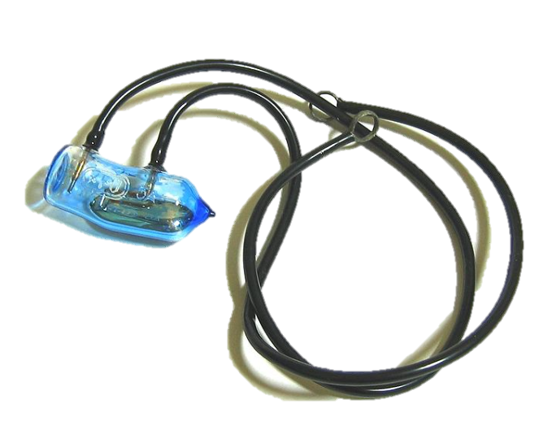
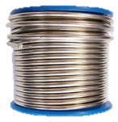
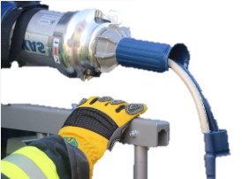
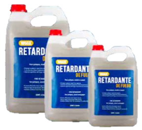

En un mundo donde la calidad del aire que respiramos influye directamente en nuestra salud y en la sostenibilidad del planeta, la investigación sobre contaminantes atmosféricos es más relevante que nunca. Sustancias como partículas suspendidas, óxidos de nitrógeno, dióxido de azufre, monóxido de carbono, compuestos orgánicos volátiles y gases de efecto invernadero tienen un impacto significativo en el medio ambiente y en los seres vivos. Estos contaminantes no solo agravan desafíos globales como el cambio climático y el deterioro de la capa de ozono, sino que también afectan la salud pública, provocando enfermedades respiratorias, cardiovasculares y alergias. A nivel ambiental, los contaminantes comprometen la vitalidad de los ecosistemas, dañan la vegetación, contaminan los cuerpos de agua y amenazan la biodiversidad. Ante esta problemática, se hace indispensable impulsar estrategias efectivas para mitigar su emisión y promover prácticas sostenibles que contribuyan a un futuro más limpio y equilibrado. Descubre con nosotros cómo enfrentar estos retos y construir un entorno más saludable para todos.
Normal
En la era digital, los sistemas operativos y las redes son fundamentales para el funcionamiento de las tecnologías modernas. Sin embargo, los materiales utilizados en la fabricación de estos componentes, tienen un impacto significativo en el medio ambiente. Estos materiales, que históricamente se emplearon en la producción de equipos electrónicos y componentes de redes, pueden causar daños graves tanto en el entorno como en la salud humana cuando no se gestionan adecuadamente.
Puede estar presente en materiales de aislamiento antiguos. Fue ampliamente usado por su resistencia al calor y a la corrosión. La exposición prolongada al amianto puede causar enfermedades graves como la asbestosis. Su uso está prohibido en muchos países, pero persiste en edificaciones antiguas.
Usado en baterías recargables y algunos tipos de conectores. También se emplea como recubrimiento anticorrosivo en ciertos componentes. Es un metal pesado que puede ser peligroso para la salud humana y el medio ambiente. La tecnología moderna busca alternativas menos dañinas.
Puede estar presente en algunos componentes electrónicos, como interruptores y relés. También se utilizaba en lámparas fluorescentes y dispositivos de medición antiguos. Es altamente tóxico y representa un riesgo ambiental si no se desecha correctamente. Muchos países han restringido su uso mediante acuerdos internacionales.
Se encuentra en soldaduras y conectores de cableado. Su uso se debe a su bajo punto de fusión y buena conductividad. Sin embargo, puede ser tóxico si se manipula incorrectamente. Las regulaciones actuales buscan reducir su empleo en productos electrónicos.
Se encuentran en aislantes y algunos tipos de condensadores. Estos compuestos son altamente tóxicos y persistentes en el medio ambiente. Se han relacionado con problemas de salud como cáncer y trastornos hormonales, y su uso está prohibido o estrictamente regulado en muchos países.
Empleados como retardantes de llama en plásticos y carcasas. Ayudan a prevenir la propagación del fuego en equipos electrónicos y textiles. Sin embargo, pueden liberar sustancias tóxicas durante la combustión, y su eliminación incorrecta puede generar riesgos para la salud y el medio ambiente.
La chatarra electrónica, también conocida como e-waste, es el conjunto de residuos de dispositivos electrónicos que ya no son funcionales. La basura electrónica, también conocida como e-waste, se refiere a todo tipo de residuos de aparatos eléctricos y electrónicos que han llegado al final de su vida útil. Este término abarca una amplia gama de productos, entre los que se incluyen: (Hacer lista) Dispositivos de comunicación: Teléfonos móviles, smartphones, tabletas.
La responsabilidad ESG (ambiental, social y de gobernanza) ha ganado una importancia creciente en los últimos años como una medida clave del comportamiento ético y sostenible de las empresas. ESG hace referencia a cómo una empresa gestiona su impacto ambiental, su relación con las comunidades y su estructura de gobernanza corporativa. Cada vez más, los inversores, consumidores y otras partes interesadas están exigiendo que las empresas no solo busquen rentabilidad económica, sino también que actúen de manera responsable en estos tres aspectos. La evaluación ESG mide el compromiso de una empresa con principios éticos, su capacidad para mitigar riesgos ambientales, su responsabilidad social y la transparencia en su administración corporativa. En este contexto, las empresas que destacan en estas áreas son consideradas líderes en sostenibilidad y tienen un impacto positivo tanto en la sociedad como en el medio ambiente.